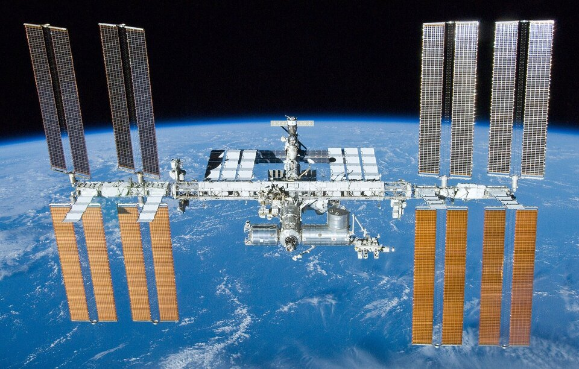

The International Space Station (ISS) is a modular space station (habitable artificial satellite) in low Earth orbit. It is a multinational collaborative project between five participating space agencies: NASA (United States), Roscosmos (Russia), JAXA (Japan), ESA (Europe), and CSA (Canada). The ownership and use of the space station is established by intergovernmental treaties and agreements. The station serves as a microgravity and space environment research laboratory in which scientific research is conducted in astrobiology, astronomy, meteorology, physics, and other fields. The ISS is suited for testing the spacecraft systems and equipment required for possible future long-duration missions to the Moon and Mars. 
The ISS programme evolved from the Space Station Freedom, an American proposal in the 1980s to construct a permanently crewed Earth-orbiting station. The ISS is the ninth space station to be inhabited by crews, following the Soviet and later Russian Salyut, Almaz, and Mir stations and the U.S. Skylab. It is the largest artificial object in space and the largest satellite in low Earth orbit, regularly visible to the naked eye from Earth's surface. It maintains an orbit with an average altitude of 400 kilometres (250 mi) by means of reboost manoeuvres using the engines of the Zvezda Service Module or visiting spacecraft. The ISS circles the Earth in roughly 93 minutes, completing 15.5 orbits per day.